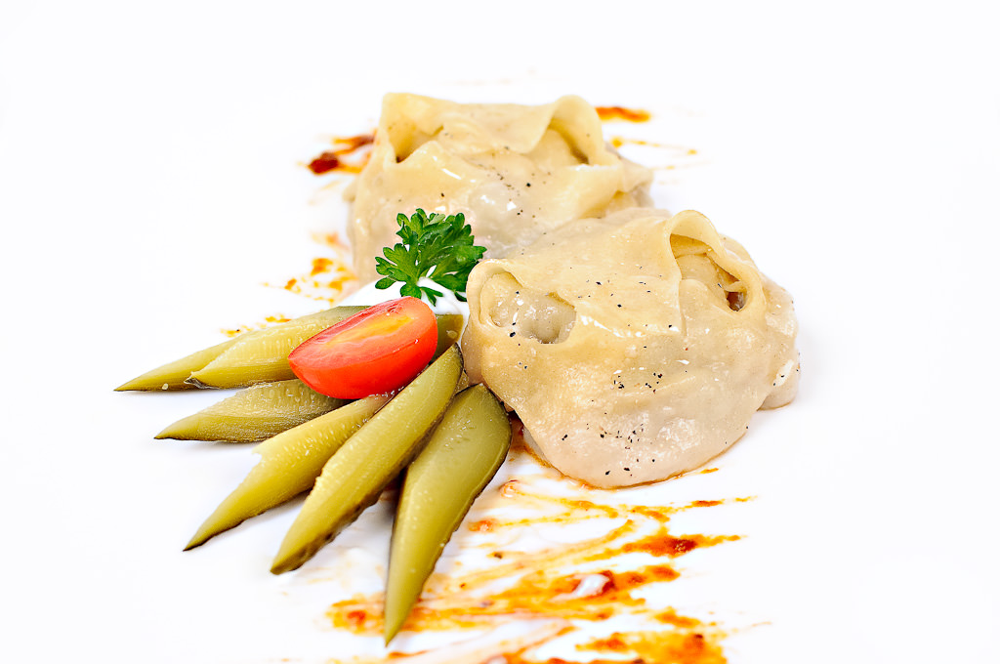
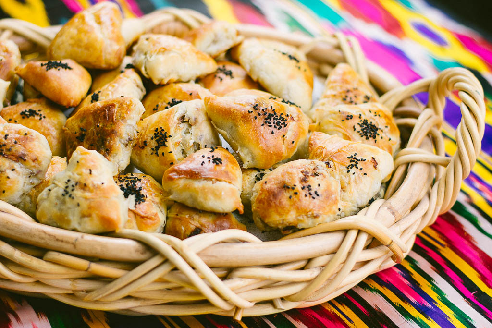
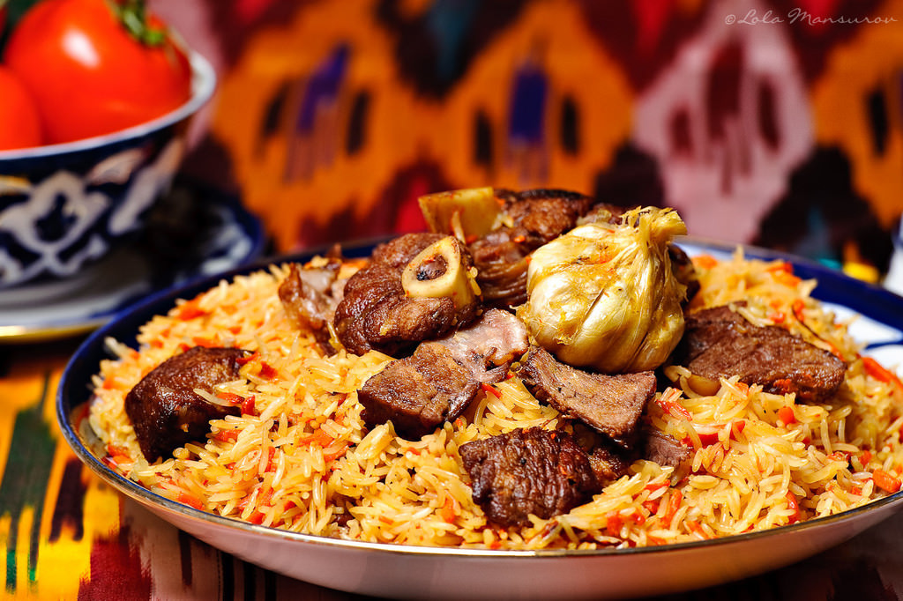
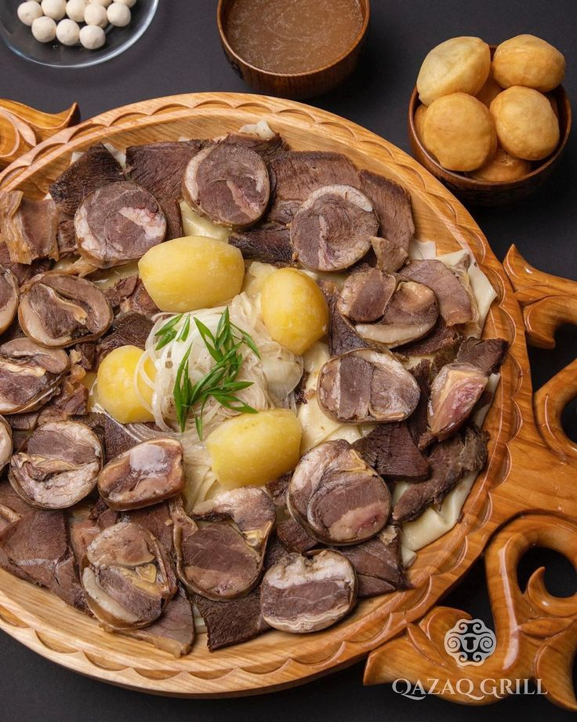
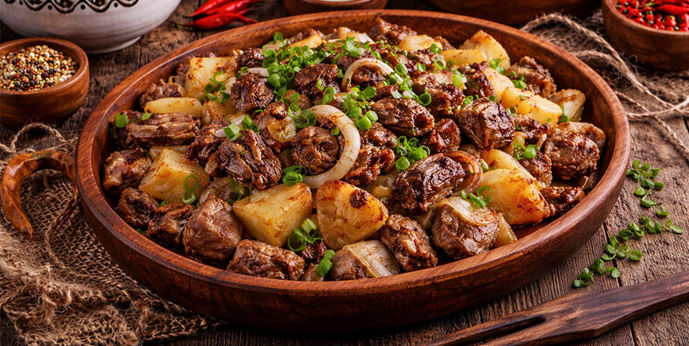

From a plate of manti to baursak with tea. Find something you want to cook today.
Save a dish with the notebook button. Find your choices in Cook next.
Separate ingredients with commas. Recipes can match any listed ingredient.
Showing 8 of 8 recipes
No results found. Try another search or category.

Dinner
Manti
Steamed dumplings filled with beef and finely chopped onion.
1 hr 30 min
Medium
4 servings
Ingredients
400 g flour
1 egg
150 ml water, plus a little if needed
500 g minced beef or lamb
3 onions, finely chopped
2 tbsp oil, for greasing
Salt and black pepper
Instructions
Mix the flour, egg, water and a pinch of salt into a firm dough. Knead until smooth, cover and rest for 30 minutes.
Combine the meat with the chopped onions, salt, pepper and 3 tablespoons of water.
Roll the dough thinly and cut into 10 cm squares. Divide the filling between them, then pinch the corners together to seal.
Grease the steamer trays and arrange the dumplings with space between them.
Steam over boiling water for 40–45 minutes, until the filling is thoroughly cooked. Serve hot.

Lunch
Samsa
Oven-baked pastry with a juicy beef and onion filling.
55 min
Easy
8 pastries
Ingredients
500 g ready-made puff pastry, thawed
350 g minced beef or lamb
2 onions, finely chopped
1 tsp ground cumin
1 egg, beaten
1 tbsp sesame seeds
Salt and black pepper
Instructions
Heat the oven to 200°C. Line a baking tray with baking paper.
Mix the meat, chopped onions, cumin, salt and pepper.
Roll out the pastry and cut into 8 squares. Put filling in the centre of each square.
Fold into triangles and press the edges firmly to seal. Place seam-side down on the tray.
Brush with beaten egg and sprinkle with sesame seeds. Bake for 30–35 minutes, until golden and the meat is thoroughly cooked.

Lunch
Plov
Rice cooked with tender beef, carrots, garlic and cumin.
1 hr 20 min
Medium
4 servings
Ingredients
350 g long-grain rice
500 g beef, cut into pieces
400 g carrots, cut into sticks
2 onions, sliced
1 whole garlic bulb
60 ml vegetable oil
1 tsp cumin seeds
Salt and black pepper
Instructions
Rinse the rice until the water runs mostly clear. Soak it while preparing the other ingredients.
Heat the oil in a heavy pot. Brown the beef, then add the onions and cook until golden.
Add the carrots, cumin, salt and pepper. Pour in enough hot water to cover the meat and simmer for 35–40 minutes.
Drain the rice and spread it evenly over the meat without stirring. Add the whole garlic bulb and enough hot water to sit about 1 cm above the rice.
Cook uncovered until the surface water is absorbed. Cover, turn the heat very low and cook for 20 minutes. Rest off the heat for 10 minutes, then mix gently.
Photo to be added
Lunch
Lagman
Noodles with beef, vegetables and a tomato sauce.
45 min
Easy
2 servings
Ingredients
250 g noodles
200 g beef
1 carrot
1/2 bell pepper
1/2 onion, chopped
1 tomato
2 garlic cloves
2 tbsp vegetable oil
1 tbsp tomato paste
Salt, pepper, and spices
Instructions
Boil the noodles in salted water until tender, then drain and rinse.
Heat the vegetable oil in a large pan over high heat and brown the meat.
Add the onion and carrot, cook for 3–4 minutes, then add the bell pepper and garlic.
Stir in the tomato paste, tomatoes, and spices, and simmer on medium heat for about 10 minutes.
Place the noodles on a plate, top with the meat and vegetable sauce, and serve hot.
Breakfast
Baursak
Soft, golden pieces of fried dough, often served with tea.
2 hr
Medium
8 servings
Ingredients
500 g all-purpose flour
250 ml warm milk
7 g dry yeast
1 tbsp sugar
1 tsp salt
2 tbsp vegetable oil
Vegetable oil for deep-frying
Instructions
Mix the warm milk, yeast and sugar. Leave for 10 minutes until foamy.
Add the flour, salt and 2 tablespoons of oil. Knead into a soft dough.
Cover and leave in a warm place for 60–90 minutes until the dough rises.
Roll the dough to about 1 cm thick and cut into small squares or diamonds.
Let the pieces rest for 10 minutes while heating frying oil to about 175°C.
Fry in batches until golden on both sides. Drain on paper towels and serve warm.
Breakfast
Shelpek
Thin fried flatbreads served warm with tea or honey.
45 min
Easy
7 flatbreads
Ingredients
400 g all-purpose flour
200 ml warm water or milk
1 tsp salt
1 tbsp vegetable oil for the dough
Vegetable oil for frying
Honey or butter to serve (optional)
Instructions
Combine the flour and salt in a bowl.
Add the warm water or milk and a tablespoon of oil. Knead until smooth.
Cover the dough and let it rest for 20 minutes.
Divide it into seven pieces and roll each piece into a thin circle.
Heat a little oil in a frying pan and cook each flatbread on both sides until lightly golden.
Drain briefly and serve warm.

Lunch
Beshbarmak
Tender meat over wide homemade noodles with onion broth.
3 hr 30 min
Medium
6 servings
Ingredients
1.5 kg beef or lamb on the bone
400 g all-purpose flour
1 egg
150 ml water for the dough
3 onions
3 litres water for the broth
Salt and black pepper
Instructions
Put the meat in a large pot of cold water and bring to a boil. Skim the foam.
Add one onion and salt, then simmer for 2–3 hours until the meat is tender. Keep the broth.
Knead the flour, egg, 150 ml water and a little salt into a firm dough. Rest for 30 minutes.
Roll the dough thinly and cut it into large squares or wide strips.
Slice the remaining onions and soften them in a little hot broth with black pepper.
Boil the dough pieces in the meat broth until cooked.
Arrange the noodles on a platter, add sliced meat and onions, and serve with broth on the side.

Dinner
Kuyrdak
Pan-fried lamb, liver, potatoes and onions.
1 hr
Medium
4 servings
Ingredients
400 g lamb, diced
200 g lamb or beef liver, diced
3 medium potatoes
2 onions
2 tbsp vegetable oil or rendered fat
100 ml water or broth
Salt and black pepper
Instructions
Cut the lamb, liver and potatoes into bite-sized pieces; slice the onions.
Heat the oil or fat in a large pan and brown the lamb.
Add the onions and cook until they begin to soften.
Add the potatoes and broth. Cover and simmer until the potatoes and lamb are nearly tender.
Add the liver near the end and cook it thoroughly, stirring gently.